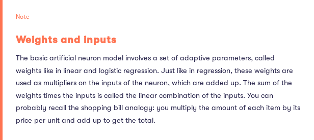
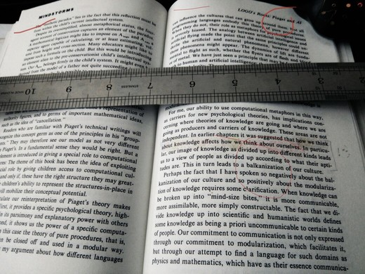

Elements of AI
Table of Contents
How Should We Define AI?
OK, let's just try to define it by examples but, temporally as what ever computers can't do. It's well documented that as soon as those methods got understood got moved e.g. to statistics. This happened to some automatic methods for search and planning, or processing uncertain information.
So, as what seems easy is actually hard and what seems hard is actually easy, this fact could also describe the state of art of the question. Examples of that range are e.g. the grasping g+ project or the cauliflower picking robot. By contrast the tasks of playing chess or solving mathematical exercises have turned out to be well suited to computers. However, let's notice of 2 key terms that help to define the field Autonomy and Adaptivity.
Let's draft a my* definition.
Considering these following assertions: 'cool things that computers can't do, machines imitating intelligent human behaviour, autonomous and adaptive systems: I feel those definitions could rather being relocated as defining different, though, related aspects of AI. For instance, I would narrow the first one to the AI research field itself though I would add a bit so it read as 'cool things that computers can't do but could'. The second one could also be better defined as a "mile-stop" to land discussions on aspects more practical. So, I would bid for a temporary goal-contextualised definition, "AI as a set of autonomous and adaptative computing technology".
Feedback eoAI, course.
I highlight the effort of the designers of this course on centring the discussion on its operational aspects without missing or misplace its referrals though giving them a more productive allocation in the whole problem.
From Interlude on the history of AI.
I find the J.McCarthy def quite straight to the question
The Bayes Rule.
Let's notice this funny (so KISS kind definition) of the Bayes rule.
- Elements:
- Prior and posterior Odds. for something happening (against it not happening). The word prior refers to our assessment of the odds before obtaining some new information that may be relevant.
- Likelihood ratio. Or, the probability of the observation in case the event of interest divided by the probability of the observation in case of no event. For instance, if the chances of having a cloudy morning on a rainy day are 9 out 10; that means that only 1 out 10 rainy days start out with blue skies. But sometimes there are also clouds without rain, 1 in 10, let's say. Now, how much higher are the chances of clouds on a rainy day compared to a rain-less day?
likelihoodratio = (/ (/ 9 10.0) (/ 1 10.0)) = 9
So, if, as seen in other example, the prior odds for rain in Helsinki is 206:159, what would be the posterior odds for rain having observed clouds in the morning in Helsinki, and the likelihood ratio for observing clouds is 9.
The Bayes rule in practice: breast cancer screening.
Let's assume that five in 100 women have breast cancer. Suppose that if a person has breast cancer, then the mammograph test will find it 80 times out of 100. The test may also fail, indicating breast cancer when none exists. This is called a false positive finding. The chances that the test nevertheless comes out positive are 10 in 100.
- Calculating the likelihood ratio:
As defined above, applied to this exercise we have: the ratio between 80:100 and 10:100
(/ (/ 80 100.0)
(/ 10 100.0)) ;;=> result 8.0
- Likelihood ratio
*prior odds:8
*5:95 = 40:95Let's recall that 40:95 en ratio terms = 40/(+ 95 40) => (/ 40 135.0) =>0.296
- In DIY terms, my answer: I'd do the question in this order: As we only can trust in the 80% sensitivity of the test (this means if 5 out 100 is the affected population, and, the test only detect 4=80%). If someone gets a positive result, what's the chance of being a true positive? given that the test also gives 10% false positive (which means: if 95 out 100 are the not event case population 10% = 9.5 still get positive)?
(/ 4 ;—Q, having "+" are you in the true-positive-group?
(+ ;13.5 is the total result positives as:
(* 0.80 5) ;80% of 5 are detected.
(* 0.10 95) ;10% of 95 got false positive
))
=> 0.2962962962962963
Figure 1: it's read incorrect, yeah. It should be 4/13.5 = 40/135 => 40:95 (wrong decision of mine about decimals) and the notation asked.
The Bayes Classifier.
assumption: the feature variables are conditionally independent given the class.
- Real World application: spam filter. Ok, but Naive? Why?. —Ok, because it just checks event or not of words isolated, not adjacency's, etc. It's a crude simplification. In the example: for messages that includes the word "million", there are on the average 5.1 spam messages for every 'ham' message.
5.1 => 51:10 => (/ 51 (+ 51 10)) => 83.6% (* 5.1 0.8 53.2 0.3) => 65.1168
- Given the example. For messages that include all those four words, there are on the average about 65 spam messages for each ham message, or about 651 spam messages for every 10 ham messages. If we wanterd to get the probability value (which was not asked) is about 651 / (651+10) = 651 / 661 or approx. 98.5 %. This message would probably end up in your junk mail folder.
Machine Learning.
The roots of machine learning are in statistics, which can also be thought of as the art of extracting knowledge of data. For details check this Wikipedia time-line.
- Types.
Supervised(e.g. regression, classification) |Unsupervised|Reinforcement Learning.Supervised learning real world questions include: How much money will we make by spending more dollars on digital advertising?; Will this loan applicant pay back the loan or not?; What's going happen to the stock market tomorrow? (where we provide with data set containing
training exampleswith associated correct labels).Typical unsupervised learning:
visualization,clustering(loyalty shopping cards | grouping customer by their shopping (low-budget-health, food enthusiast, fish-lover, soda-pizza-6days-week ones, etc.)) |generative modellinge.g.GANs(generative adversarial networks) a technique which has lead to great advances (e.g given some data, for example, photographs of people's faces, a generative model can generate more of the same: more real-looking but artificial images of people's faces). - The Nearest Neighbour Classifier.
Is among the simplest possible classifiers. When given a item to classify, it finds the training data item that is most similar to the new item, and output its label.
- Using the nearest neighbour to predict user behaviour.
The idea is to use the very simple principle that users with similar past behavior tend to have similar future behaviour. Also, instead of the manually entered metadata, the recommendation systems use something called
collaborative filtering(other users' data to predict your preferences (kind of filters which are related with those caveats mentioned earlier, the so calledfilter bubbles)
- Using the nearest neighbour to predict user behaviour.
The idea is to use the very simple principle that users with similar past behavior tend to have similar future behaviour. Also, instead of the manually entered metadata, the recommendation systems use something called
- Regression.
Supervised learning method ✓ almost as simple as the nearest neighbour classifier: linear regression.✓ (suited better in situations where the output variable can be any number like the price of a product, the distance to an obstacle, the box-office revenue of the next Star Wars movie, and so on) close cousin: logistic regression.✓
In linear regression terminology, the prices of the different products (see e.g the shopping list example) would be called
coefficients or weights. For example, when we use linear regression in the life expectancy example, the weight of smoking (cigarettes per day) is about minus half a year, meaning that smoking one cigarette more per day takes you on the average half a year closer to termination. Likewise, the weight of vegetable consumption (handful of vegetables per day) has weight plus one year, so eating a handful of greens every day gives you on the average one more year.
(+ 80 -5 ;male -4 ;smoking 8 cigarettes/day * 0.5 2) ;2 handful veggies/day (+ 80 -5 ;male +6) ;6 handul veggies/day (+ 80 ;female -8 ;smoking 16c/d * 0.5 1) ;1 handul veggies/day (+ 80 ;female 4) ;4 handul veggies/day(+ 80 -5 -4 2)
| gender | smoking (cigarrettes per day) | Vegetables (handfuls per day) | Life expectancy |
|---|---|---|---|
| male | 8 | 2 | (+ 80 -5 -4 2)=>73 |
| male | 0 | 6 | (+ 80 -5 6)=>81 |
| female | 16 | 1 | (+ 80 -8 1)=>73 |
| female | 0 | 4 | (+ 80 4)=>84 |
- Hey, What if..
Above, we discussed how predictions are obtained from linear regression when both the weights and the input features are known. So we are given the inputs and the weight, and we can produce the predicted output. This is the task solved by machine learning.
But, in the real-world, the actual output isn’t always fully determined by the input, because of various factors that introduce uncertainty or “noise” into the process. You can think of shopping at a bazaar where the prices for any given product may vary from time to time, or a restaurant where the final damage includes a variable amount of tip. In such situations, we can estimate the prices but only with some limited accuracy.
- Applications?.
Linear regression has its limits but they are often compensated by its simplicity. It's been successfully used in the following problems to give a few examples: prediction of retail demand for products ✓, prediction of box-office revenue of Hollywood movies ✓, prediction of software cost✓, prediction of insurance cost ✓, prediction of crime rates ✓, prediction of real state prices ✓.
Logistic Regression.
So, what if we had a method to produce outputs as the nearest neighbour, labels, but interpretable like linear regression?.
In the simplest case, we take the output from linear regression, which is a number, and predict one label A if the label is more than zero, and another label B if the label is less than or equal to zero.
- Example, in the hours-study-passing exam example, if after studying for five hours, the probability of passing is a little over 20% (without going into the details on how to obtain the curve, but it will be similar to how we learn the weights in linear regression) If we wanted to have an 80% chance of passing a university exam, based on the figure of the mentioned example, we should study approximately between 10-11 hours. Other applications: predicting financial risks ✓, medical studies ✓, etc.
{kind=link}
Neural Networks.
Neural networks basics.
To better understand the whole, let's start unfolding the individual units that make it up.
- Deep Learning. Which has to do with certain kinds of machine learning techniques where several "layers" of simple processing units are connected so that the input to the system is passed through each one of them in turn (architecture basically inspired by the processing of visual information in the brain).
- Neurons, cell bodies, and signals.
Biological or virtual, a
nnconsists of a large number of simple units that receive and transmit signals to each other. - Dendrites, axons and synapses. In short sketch: we call dendrites the input bound and axon the outgoing bunch of signals. Each axon may be connected to one or more dendrites at intersections, called synapses.
- Living between two lead tasks. Understanding biological systems (one of its top goals are those amazing brain-computer interfaces * *) and using biological system as an inspiration to build better AI and machine learning techniques, that's the task.
Compared to how computers traditionally work, neural networks have certain special features:
- information is processed in a central processor (aptly named the central processing unit). In neural networks, the system consists of a large number of neurons, each of which can process information on its own so that instead of having a CPU process each piece of information one after the other, the neurons process vast amounts of information simultaneously.
- The second difference is that data storage (memory) and processing isn’t separated like in traditional computers. The neurons both store and process information so that there is no need to retrieve data from the memory for processing. The data can be stored short term in the neurons themselves. So, now using special hardware and a capability called
parallel processing, we can simulate it..
How neural networks are built.
Having discussed linear and logistic regression, the essential technical details of nn can be seen as slight variations of the same idea.

Figure 3: Weights and Inputs..
If we have a neuron with six inputs (analogous to the amounts of the six shopping items: potatoes, carrots, and so on), input1, input2, input3, input4, input5, and input6, we also need six weights. The weights are analogous to the prices of the items. We’ll call them weight1, weight2, weight3, weight4, weight5, and weight6. In addition, we’ll usually want to include an intercept term like we did in linear regression. This can be thought of as a fixed additional charge due to processing a credit card payment, for example.
- Activation & Outputs:
Once the linear combination has been computed, the neuron does one more operation: it takes the linear combination and puts it through a so called
activation function:- Identity function: (do nothing) just output the linear combination.
- Step Function: if the value of the linear combination is greater than zero, send a pulse (
ON) otherwise do nothing (OFF). - Sigmoid Function, a "soft" version of the step function.
- Perceptron, the mother of all
ANNs.- A (simple) fancy name for the simple neuron model with the step activation function?
- A simple classifier in binary classification tasks.
- A method for learning the weights of the Perceptron from data (| or the Perceptron algorithm (introduced by the psychologist Frank Rosenblatt, 1957)).
- (it's just about as simple as the nearest neighbour classifier: the basic principle is to feed the network training data one example at a time. Each misclassification leads to an update in the weight).
- Putting neurons together: networks.
To unleash the full potential of
NNwe (can) use the output of one neuron as the input of other neurons ..` (where I've seen this pattern before? ~~`)- And, in turns, for multilayer perceptron, we got now the so called backpropagation algorithm, (invented around late 1980)
According to chronicle initial excitement about the perceptron concept somehow became reduced (for about 2 decades) where the narrow review by Marvin Minsky & Seymour Papert is mentioned as a cause and, as a I actually have got a book by S.Papert entitled "Mindstorms" whit a chapter dedicated to Piaget (LOGO's root: Piaget and AI) and no way of accessing to "The Perceptron" (book) I felt in need of stopping here and have a narrow new reading digging for a more enlightened connection to my own work.

Figure 4: how we think about knowledge affects how we think about ourselves, tags: modularization, balkanization-in-culture,
- A simple neural network classifier exercise. Hey, done but…
Advanced neural networks techniques.
OK, on the top of all that explained some interesting and powerful variations on the theme that have lead to great advances in deep learning in many areas..
- Convolutional neural networks
CNNs.- it reduces the training data required to detect objects in different conditions (the trick: basically using the same input weights for many neurons —so that all these neurons are activated by the same pattern but with different input pixels) [smart, isn't? ~~`]
I had to get slow down and reading up on some previous concepts as they appeared so that getting a more consistent picture of the subject but at once I have to highlight the simplicity of the presentation of such so intimidating ideas. I have really enjoyed this section of the course.
Implications.
Here 2 paradigms are isolated from AI history, NN in the 60s, and the expert systems based on logic and human-coded rules, in the 80s.
From AI story, let's notice some explanatory hiccups:
- In the case of
NNin the 1960, the hiccups were related to handling nonlinearities and to solving the machine learning problems associated with the increasing number of parameters required byNNarchitectures. - In the case of expert systems in the 1980s, the hiccups were associated with handling uncertainty and common sense.
My tracking conclusion note.
I have chosen the following paper https://s3-us-west-2.amazonaws.com/mindwebresources/MindAI_General_Whitepaper.pdf as it connects directly with the core of my personal interest in the subject. The paper works on several keystones but the one I would point out as the main stream is make AI, let's say, more (human) workable in the mood as it would be defined e.g. by the literate programming movement. In the paper this feature is named as making-of AI a reasoning engine, though in my opinion AI is a reasoning engine, already. So, the feature would get qualified as such by its human interactivity, or weighting it in a new built-in wrapping algorithm.
I strongly feel this feature which, if allowed, I temporally would call literate reasoning engine would fit the gap between AI, as seen so far and a great deal of its caveats as found in real world applications. So, despite all that intimidating press about AI, part of which its rewed in this course, I prefer think of it as a natural extension of learning, in a kind of modular ensemble. I am more familiar with the psychological approach to cognition and I bias about AI probably some different than I would if I came from the computer science field, but, as I could report it, the path from appearance, so the very first contact to anything we want to take as object, to efficient observation is really full of eventualities whose plot is itself the history, also the outcome, of method in science. Let's take as a first approach e.g. the Piaget's development scheme, then the Bayes warning-out, then, the so conspicuous work by D. Kahneman. Going and grouping from those eye-catching observations to the most complex correlations, the whole process got broken in a point, so I always wondered whether or not it will get integrated again as sequences of a same human feature, an ultimate reasoning extension-tool.